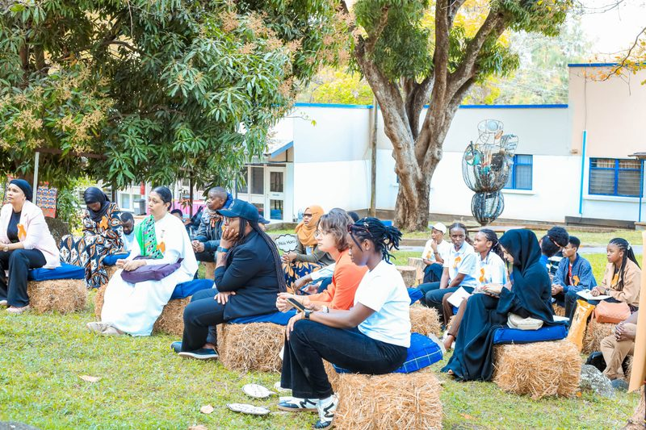
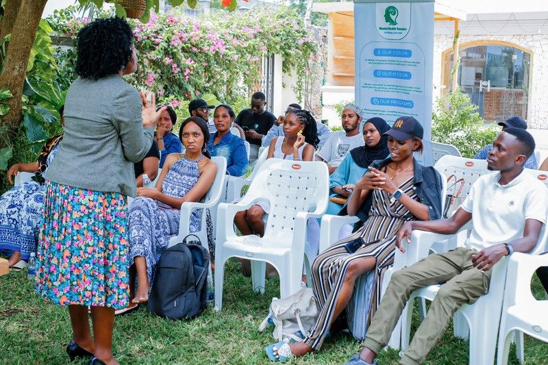
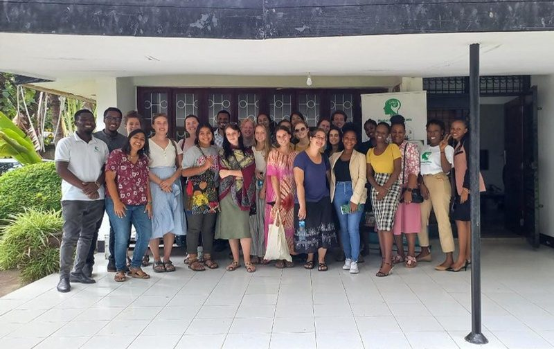
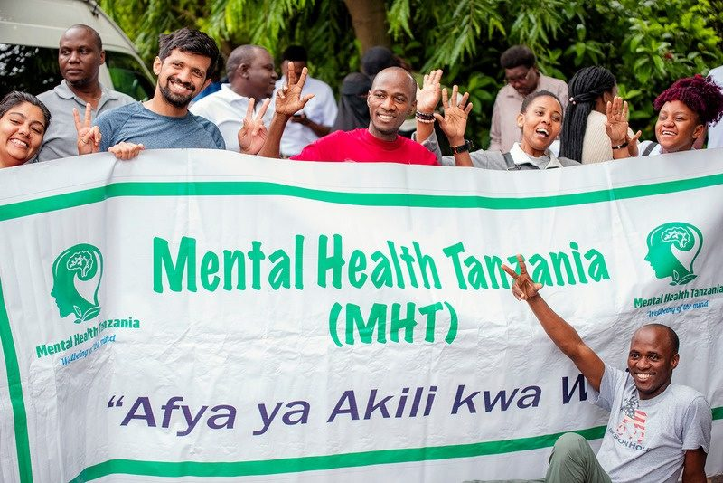
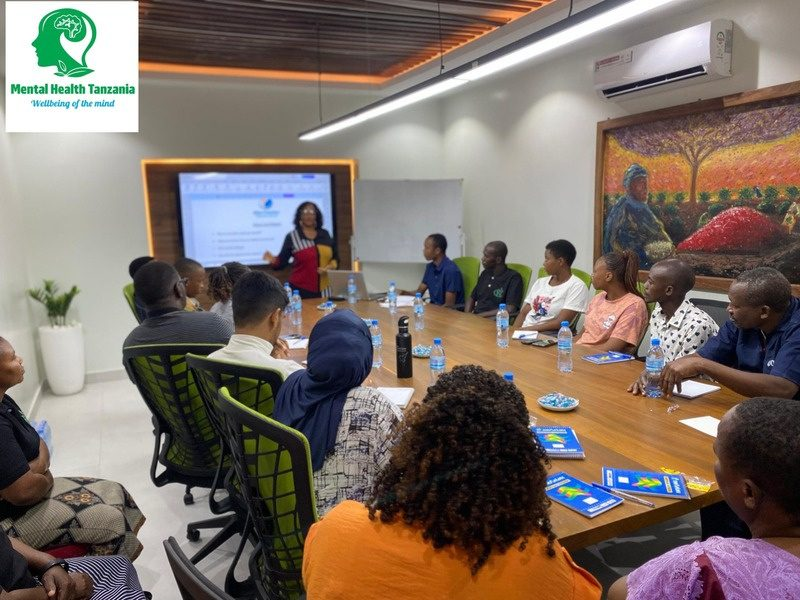

Organisation Profile
Psychological, Mental Health & Wellness Interventions
The complete picture of Mental Health Tanzania — who we are, what we do, what we've achieved, and how to reach us.
All about MHT
Promoting, protecting & sustaining the mind
MHT is dedicated to promoting, protecting, sustaining and maintaining psychological, mental health and overall wellbeing at individual, community, institutional and national levels.
We achieve this by creating, designing, developing and implementing impactful programs, projects, campaigns and initiatives — through advocacy, awareness, psychoeducation, psychosocial support, training and research.
We also provide prevention, treatment and management of mental illnesses and psychological challenges through holistic mental health and psychiatric clinical services — screening, assessments, diagnosis, psychotherapy, counselling and tele-mental health services.
Drives · motives · priorities
Six organisational objectives
Advocating mental healthcare systems
Promoting and advocating for stronger mental healthcare systems across Tanzania.
Awareness & psychoeducation
Mental health awareness and psychoeducation for every community and institution.
Mental health research
Evidence-building through research into the country's mental health landscape.
Clinical & psychiatric services
Psychotherapy, counselling, psychological screening and assessments.
Community psychosocial support
Community psychological and psychosocial support where people live and work.
Training, coaching & mentorship
Consultation, training, coaching and mentorship programs that build capacity.
The need that led to MHT
A crisis that demanded grassroots action
More people than ever are struggling with psychological challenges and mental illness — a serious mental health crisis in our society requiring urgent intervention from the grassroots level. Mental health struggles don't just hurt people — they weaken our workforce and our communities.
MHT was established in response to this growing need — committed to promoting mental health, preventing psychological challenges, expanding access to quality care, and contributing to the transformation of Tanzania's mental healthcare systems.

Why good mental health matters nationally
The long-standing institution
Movement → Initiative → CBO → NGO
A seamless evolution that established MHT as one of Tanzania's pioneering, longest-standing mental healthcare institutions — proven capacity, credibility and lasting impact.

The Mental Health Movement
Started as a movement to advocate for mental health in Tanzania.
Mental Health Initiative
Expanded into the Mental Health Initiative, widening programs and reach.

Community-Based Organization
Registered as a local CBO — formalizing grassroots operations.

National NGO
Registered as a nationally operating NGO serving all of Tanzania — and beyond.
Our services
Six ways we serve
Counselling & Psychotherapy
Helping you cope, heal and build resilience through emotional, mental health and psychological challenges.
Corporate Mental Health Training
Promoting workplace wellbeing and productivity for teams and organisations.
Workshops & Seminars
Interactive workshops and informative seminars building awareness, psychoeducation and practical skills.
Psychometric Screening & Assessment
Clinical evaluation producing reliable diagnostic insights and evidence-based care recommendations.
Retreats & Wellness Programs
Mental health retreats and wellness programs for restoration and sustained wellbeing.
Crisis Intervention
Prompt response, psychosocial support, emotional stabilization, recovery strategies and sustained care during emergencies.
We deliver our services through
Designed for everyone
Who our services benefit
We also work with NGOs, agencies, associations, companies, government bodies and other stakeholders — at home, workplaces, schools and community settings. Whether daily mental health motivation, facing psychological challenges, or everyday emotional wellbeing — MHT supports you.
Qualified & competent professionals
A multidisciplinary team
Multidisciplinary practitioners delivering integrated, evidence-based mental healthcare.

Integrity · compliance · transparency · accountability
Why trust doing business with us?
Legal & tax compliance
- Legally registered to operate nationwide — Cert No ooNGO/R/1232
- Fully compliant with national tax regulations
- Registered with Tanzania Revenue Authority — TIN 154097872
- Official TRA-approved EFD receipts for all transactions
Billing & payments
- Proforma & official invoices — precise cost estimates, transparent records
- M-Pesa 0742 501 501
- NBC Bank 015172000568
- Both registered under Mental Health Tanzania
Specialization & partnerships
- Exclusive focus only on mental healthcare
- Evidence-based, multidisciplinary, integrated delivery
- Strong culture of partnerships — practitioners, donors, institutions & government as technical and referral partners
Accountability
- Official billing & secured payments
- Transparent processes & auditable transactions
- High-quality, confidential, ethical, professional services
Our approach
Prevent · Detect · Treat · Sustain
Prevent
Stop mental illnesses before they take hold — awareness, training, retreats.
Detect
Catch early symptoms — screenings, assessments, workshops.
Treat
Deliver evidence-based treatment — counselling, psychotherapy, crisis intervention.
Sustain
Maintain long-term wellbeing through ongoing support.
For the last 5 years, MHT has supported more than 20 agencies, companies and NGOs — with measurable improvement in employee wellbeing and psychological safety.
Track record of impact & milestones
Seven years. Five million lives.
Reaching more than 5 million beneficiaries through awareness, psychoeducation, clinical services, advocacy, digital innovation and community programs — despite operating under resource-constrained conditions.
Where to get our services
Across the country
Dar es Salaam
Physical office
Arusha
Physical office
Mwanza
Physical office · P.O. Box 2018
Dodoma
Physical presence
+ Everywhere else
Quality mental healthcare anywhere nationwide — online sessions, in-person support & home visits by certified professionals.
Biodata of the organisation
On the record
- Organization
- Mental Health Tanzania (MHT)
- Physical address
- Mwanza · Arusha · Dodoma · Dar es Salaam
- Postal address
- P.O. Box 2018, Mwanza
- Status
- Non-Governmental Organization (NGO)
- Registration no.
- ooNGO/R/1232
- Area of operation
- Countrywide — Tanzania
- Office phone
- +255 742 501 501
- Website
- www.mht.care
- Contact person
- Dr. Philimina Scarion — Administrative Director · +255 746 779 787
- care@mht.care · info@mht.care
Interested in partnerships, opportunities or our services?
Program collaboration, sponsorship, internships, ambassador roles, volunteering, fieldwork, practicum placements, or mental health club membership — karibu sana.